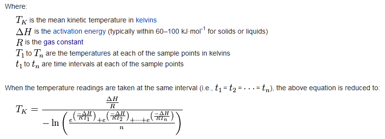
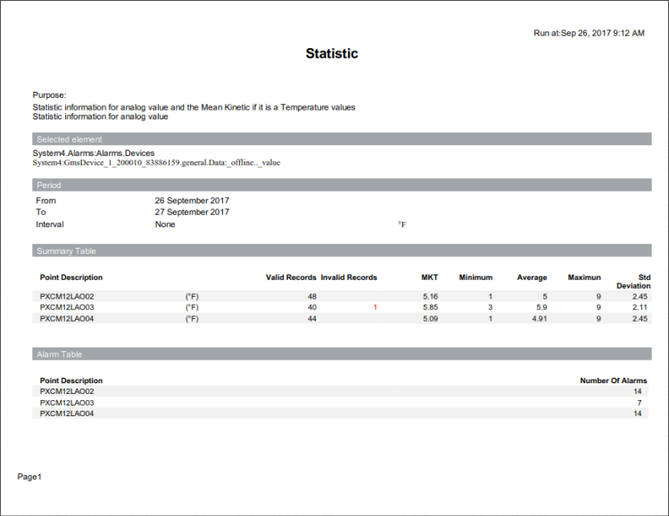

Statistic Summary MKT Report
Statistic Summary MKT Report
This report shows key statistical summaries including Mean Kinetic Temperature (MKT).
About mean kinetic temperature
MKT is often used in the pharmaceutical industry for warehousing and stability applications. It is a calculated temperature value that includes the effects of temperature variations over a period of time. MKT expresses the cumulative thermal stress experienced by a product at varying temperatures during storage and distribution.
MKT differs from other means (such as a simple numerical average or arithmetic mean) because higher temperatures are given greater weight in computing the average. This weighting is determined by a geometric transformation—the natural logarithm of the temperature number.
Disproportionate weighting of higher temperature in a temperature series according to the MKT recognizes the accelerated rate of thermal degradation of materials at these higher temperatures. MKT accommodates this non-linear effect of temperature.
The following formula is used to calculate MKT:

Sample report

Legend
Indicator | Description for Table |
Red Value in Summary Table Section | Highlights the number of bad or invalid records found in trend and not used to do a calculation for MKT/Min/Max/Average and standard deviation. |